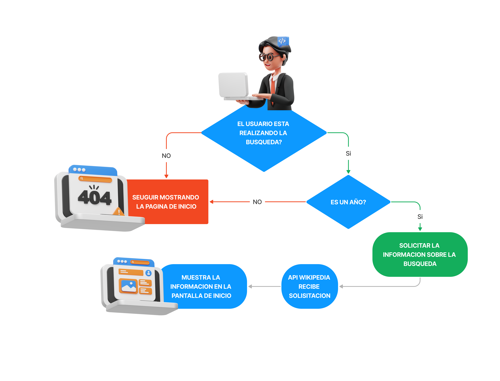
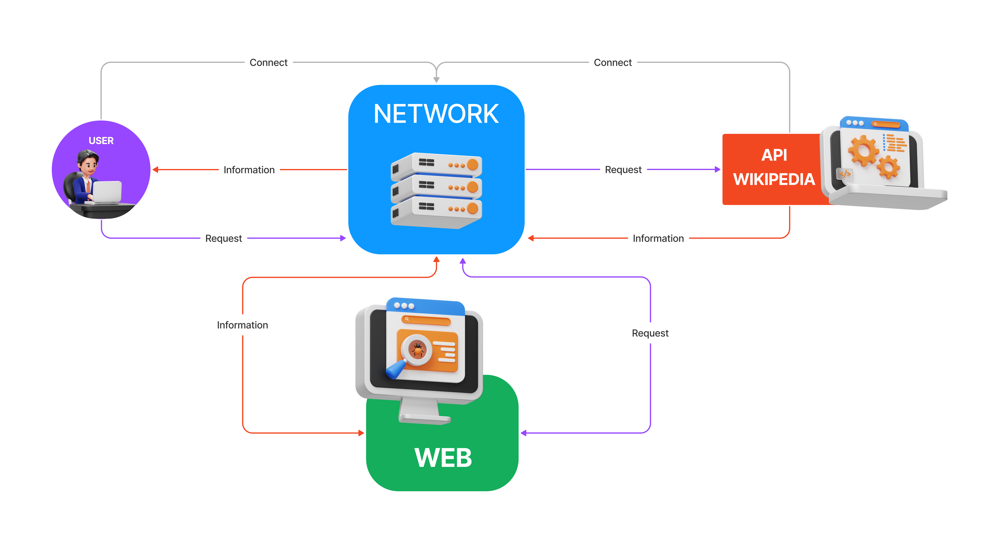

PROJECT 360


SOBRE NOSOTROS
Saber cual es nuestro lugar en el mundo siempre despierta curiosidad. Hay tantos datos disponibles que no hace falta tirar de horóscopo ni cartas astrales para conocer más datos de uno mismo según su día de nacimiento. Tan solo con un día, un mes y un año, la red es capaz de obtener toda la informacion que ha pasado en tu año de nacimiento!
DIAGRAMA DE PROCESO

DIAGRAMA DE USO

El código Javascript presentado permite a los usuarios buscar información en la API pública de Wikipedia y obtener resultados en una página web. Por lo tanto, el caso de uso principal sería el de "Buscar información en la API de Wikipedia", que se descompone en los siguientes subcasos de uso:
- - Escribir término de búsqueda
- - Realizar búsqueda
- - Mostrar resultados
- - Seleccionar resultado para visualización detallada.
DIAGRAMA LOGICO


Presenta en el código Javascript consta de dos componentes principales: la interfaz de usuario y la lógica de búsqueda. La interfaz de usuario es responsiva y permite al usuario escribir un término de búsqueda y realizar la búsqueda. La lógica de búsqueda se encarga de conectarse a la API pública de Wikipedia, enviar la consulta de búsqueda y procesar los resultados para mostrarlos en la interfaz de usuario.
DIAGRAMA FISICO

Se observa que la interfaz de usuario se ejecuta en el navegador web del usuario, mientras que la lógica de búsqueda se ejecuta en el servidor de Wikipedia a través de una conexión a Internet. El servidor de Wikipedia se encarga de recibir la solicitud de búsqueda, procesarla y enviar los resultados de vuelta al navegador web del usuario.